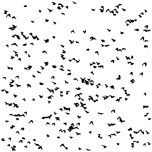

trademarks (figure 2)
"An alternative approach to computing shape orientation with an application to compound shapes",
Jovisa Zunic and Paul L. Rosin,
International Journal of Computer Vision,
vol. 81, no. 2, pp. 138-154, 2009
The images from the above paper are shown below, and the (full resolution) set is zipped up for downloading here. (filesize = 16MB)
trademarks (figure 2)
figure 3 - original gray level versions

figure 3 - extracted blobs

figure 7 - original gray level versions
figure 7 - after intensity correction
figure 7 - extracted blobs
figure 8 - original gray level versions
figure 8 - after intensity correction
figure 8 - extracted blobs
figure 11
figure 12

figure 13
figure 14